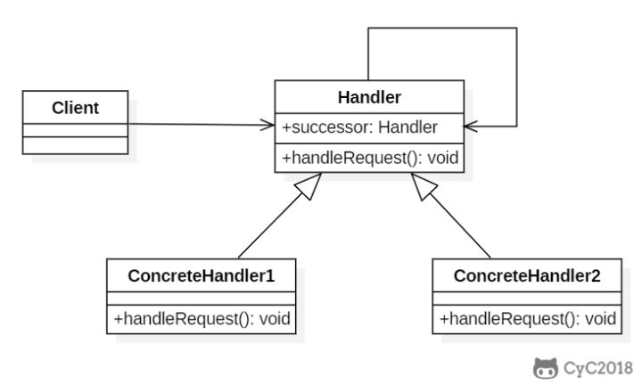
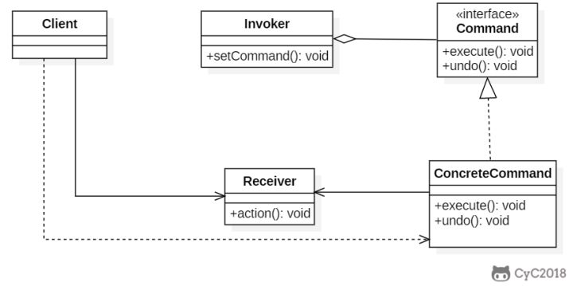
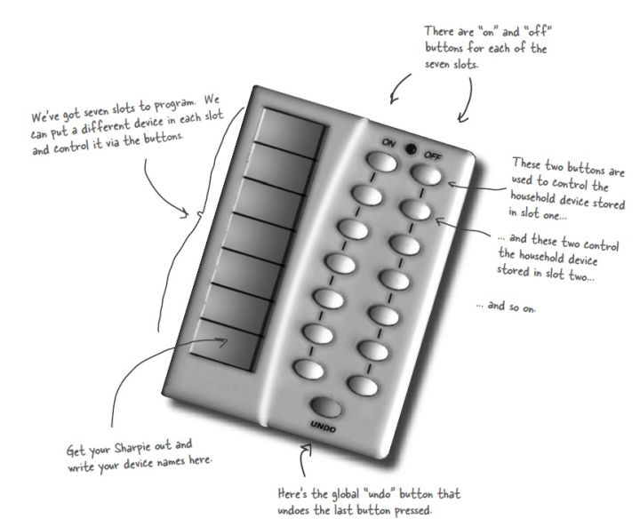
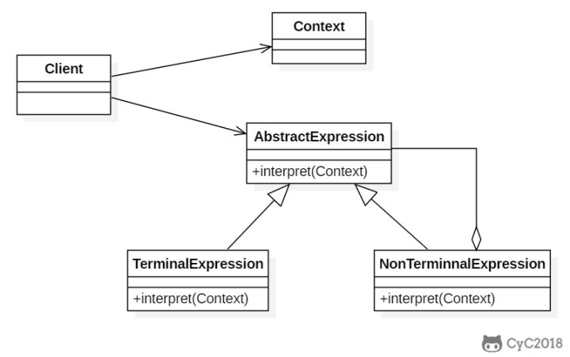
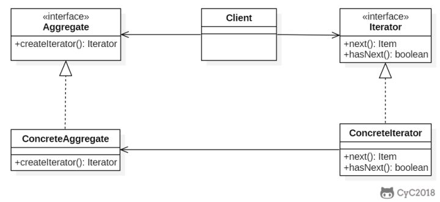
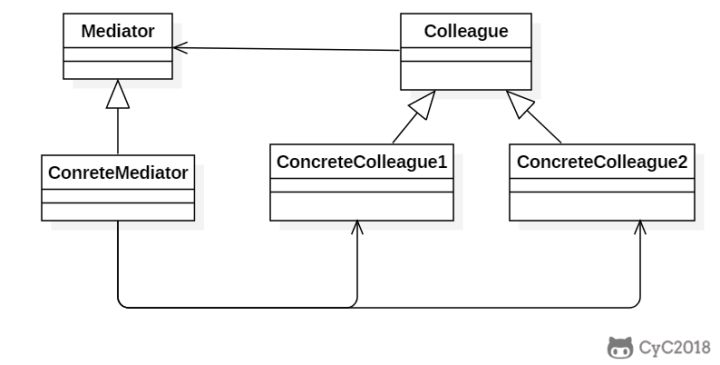
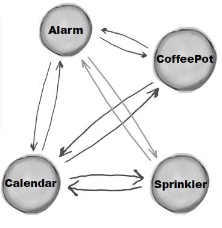
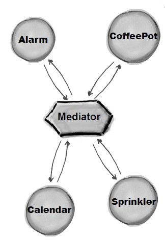

本人免费整理了Java高级资料，涵盖了Java、Redis、MongoDB、MySQL、Zookeeper、Spring Cloud、Dubbo高并发分布式等教程，一共30G，需要自己领取。
传送门：https://mp.weixin.qq.com/s/JzddfH-7yNudmkjT0IRL8Q
使多个对象都有机会处理请求，从而避免请求的发送者和接收者之间的耦合关系。将这些对象连成一条链，并沿着这条链发送该请求，直到有一个对象处理它为止。

public abstract class Handler {
protected Handler successor;
public Handler(Handler successor) {
this.successor = successor;
}
protected abstract void handleRequest(Request request);
}
public class ConcreteHandler1 extends Handler {
public ConcreteHandler1(Handler successor) {
super(successor);
}
@Override
protected void handleRequest(Request request) {
if (request.getType() == RequestType.TYPE1) {
System.out.println(request.getName() + " is handle by ConcreteHandler1");
return;
}
if (successor != null) {
successor.handleRequest(request);
}
}
}
public class ConcreteHandler2 extends Handler {
public ConcreteHandler2(Handler successor) {
super(successor);
}
@Override
protected void handleRequest(Request request) {
if (request.getType() == RequestType.TYPE2) {
System.out.println(request.getName() + " is handle by ConcreteHandler2");
return;
}
if (successor != null) {
successor.handleRequest(request);
}
}
}
public class Request {
private RequestType type;
private String name;
public Request(RequestType type, String name) {
this.type = type;
this.name = name;
}
public RequestType getType() {
return type;
}
public String getName() {
return name;
}
}
public enum RequestType {
TYPE1, TYPE2
}
public class Client {
public static void main(String[] args) {
Handler handler1 = new ConcreteHandler1(null);
Handler handler2 = new ConcreteHandler2(handler1);
Request request1 = new Request(RequestType.TYPE1, "request1");
handler2.handleRequest(request1);
Request request2 = new Request(RequestType.TYPE2, "request2");
handler2.handleRequest(request2);
}
}
request1 is handle by ConcreteHandler1
request2 is handle by ConcreteHandler2
将命令封装成对象中，具有以下作用：

设计一个遥控器，可以控制电灯开关。

public interface Command {
void execute();
}
public class LightOnCommand implements Command {
Light light;
public LightOnCommand(Light light) {
this.light = light;
}
@Override
public void execute() {
light.on();
}
}
public class LightOffCommand implements Command {
Light light;
public LightOffCommand(Light light) {
this.light = light;
}
@Override
public void execute() {
light.off();
}
}
public class Light {
public void on() {
System.out.println("Light is on!");
}
public void off() {
System.out.println("Light is off!");
}
}
/**
* 遥控器
*/
public class Invoker {
private Command[] onCommands;
private Command[] offCommands;
private final int slotNum = 7;
public Invoker() {
this.onCommands = new Command[slotNum];
this.offCommands = new Command[slotNum];
}
public void setOnCommand(Command command, int slot) {
onCommands[slot] = command;
}
public void setOffCommand(Command command, int slot) {
offCommands[slot] = command;
}
public void onButtonWasPushed(int slot) {
onCommands[slot].execute();
}
public void offButtonWasPushed(int slot) {
offCommands[slot].execute();
}
}
public class Client {
public static void main(String[] args) {
Invoker invoker = new Invoker();
Light light = new Light();
Command lightOnCommand = new LightOnCommand(light);
Command lightOffCommand = new LightOffCommand(light);
invoker.setOnCommand(lightOnCommand, 0);
invoker.setOffCommand(lightOffCommand, 0);
invoker.onButtonWasPushed(0);
invoker.offButtonWasPushed(0);
}
}
为语言创建解释器，通常由语言的语法和语法分析来定义。

以下是一个规则检验器实现，具有 and 和 or 规则，通过规则可以构建一颗解析树，用来检验一个文本是否满足解析树定义的规则。
例如一颗解析树为 D And (A Or (B C))，文本 "D A" 满足该解析树定义的规则。
这里的 Context 指的是 String。
public abstract class Expression {
public abstract boolean interpret(String str);
}
public class TerminalExpression extends Expression {
private String literal = null;
public TerminalExpression(String str) {
literal = str;
}
public boolean interpret(String str) {
StringTokenizer st = new StringTokenizer(str);
while (st.hasMoreTokens()) {
String test = st.nextToken();
if (test.equals(literal)) {
return true;
}
}
return false;
}
}
public class AndExpression extends Expression {
private Expression expression1 = null;
private Expression expression2 = null;
public AndExpression(Expression expression1, Expression expression2) {
this.expression1 = expression1;
this.expression2 = expression2;
}
public boolean interpret(String str) {
return expression1.interpret(str) && expression2.interpret(str);
}
}
public class OrExpression extends Expression {
private Expression expression1 = null;
private Expression expression2 = null;
public OrExpression(Expression expression1, Expression expression2) {
this.expression1 = expression1;
this.expression2 = expression2;
}
public boolean interpret(String str) {
return expression1.interpret(str) || expression2.interpret(str);
}
}
public class Client {
/**
* 构建解析树
*/
public static Expression buildInterpreterTree() {
// Literal
Expression terminal1 = new TerminalExpression("A");
Expression terminal2 = new TerminalExpression("B");
Expression terminal3 = new TerminalExpression("C");
Expression terminal4 = new TerminalExpression("D");
// B C
Expression alternation1 = new OrExpression(terminal2, terminal3);
// A Or (B C)
Expression alternation2 = new OrExpression(terminal1, alternation1);
// D And (A Or (B C))
return new AndExpression(terminal4, alternation2);
}
public static void main(String[] args) {
Expression define = buildInterpreterTree();
String context1 = "D A";
String context2 = "A B";
System.out.println(define.interpret(context1));
System.out.println(define.interpret(context2));
}
}
true
false
提供一种顺序访问聚合对象元素的方法，并且不暴露聚合对象的内部表示。

public interface Aggregate {
Iterator createIterator();
}
public class ConcreteAggregate implements Aggregate {
private Integer[] items;
public ConcreteAggregate() {
items = new Integer[10];
for (int i = 0; i < items.length; i++) {
items[i] = i;
}
}
@Override
public Iterator createIterator() {
return new ConcreteIterator<Integer>(items);
}
}
public interface Iterator<Item> {
Item next();
boolean hasNext();
}
public class ConcreteIterator<Item> implements Iterator {
private Item[] items;
private int position = 0;
public ConcreteIterator(Item[] items) {
this.items = items;
}
@Override
public Object next() {
return items[position++];
}
@Override
public boolean hasNext() {
return position < items.length;
}
}
public class Client {
public static void main(String[] args) {
Aggregate aggregate = new ConcreteAggregate();
Iterator<Integer> iterator = aggregate.createIterator();
while (iterator.hasNext()) {
System.out.println(iterator.next());
}
}
}
集中相关对象之间复杂的沟通和控制方式。

Alarm（闹钟）、CoffeePot（咖啡壶）、Calendar（日历）、Sprinkler（喷头）是一组相关的对象，在某个对象的事件产生时需要去操作其它对象，形成了下面这种依赖结构：

使用中介者模式可以将复杂的依赖结构变成星形结构：

public abstract class Colleague {
public abstract void onEvent(Mediator mediator);
}
public class Alarm extends Colleague {
@Override
public void onEvent(Mediator mediator) {
mediator.doEvent("alarm");
}
public void doAlarm() {
System.out.println("doAlarm()");
}
}
public class CoffeePot extends Colleague {
@Override
public void onEvent(Mediator mediator) {
mediator.doEvent("coffeePot");
}
public void doCoffeePot() {
System.out.println("doCoffeePot()");
}
}
public class Calender extends Colleague {
@Override
public void onEvent(Mediator mediator) {
mediator.doEvent("calender");
}
public void doCalender() {
System.out.println("doCalender()");
}
}
public class Sprinkler extends Colleague {
@Override
public void onEvent(Mediator mediator) {
mediator.doEvent("sprinkler");
}
public void doSprinkler() {
System.out.println("doSprinkler()");
}
}
public abstract class Mediator {
public abstract void doEvent(String eventType);
}
public class ConcreteMediator extends Mediator {
private Alarm alarm;
private CoffeePot coffeePot;
private Calender calender;
private Sprinkler sprinkler;
public ConcreteMediator(Alarm alarm, CoffeePot coffeePot, Calender calender, Sprinkler sprinkler) {
this.alarm = alarm;
this.coffeePot = coffeePot;
this.calender = calender;
this.sprinkler = sprinkler;
}
@Override
public void doEvent(String eventType) {
switch (eventType) {
case "alarm":
doAlarmEvent();
break;
case "coffeePot":
doCoffeePotEvent();
break;
case "calender":
doCalenderEvent();
break;
default:
doSprinklerEvent();
}
}
public void doAlarmEvent() {
alarm.doAlarm();
coffeePot.doCoffeePot();
calender.doCalender();
sprinkler.doSprinkler();
}
public void doCoffeePotEvent() {
// ...
}
public void doCalenderEvent() {
// ...
}
public void doSprinklerEvent() {
// ...
}
}
public class Client {
public static void main(String[] args) {
Alarm alarm = new Alarm();
CoffeePot coffeePot = new CoffeePot();
Calender calender = new Calender();
Sprinkler sprinkler = new Sprinkler();
Mediator mediator = new ConcreteMediator(alarm, coffeePot, calender, sprinkler);
// 闹钟事件到达，调用中介者就可以操作相关对象
alarm.onEvent(mediator);
}
}
doAlarm()
doCoffeePot()
doCalender()